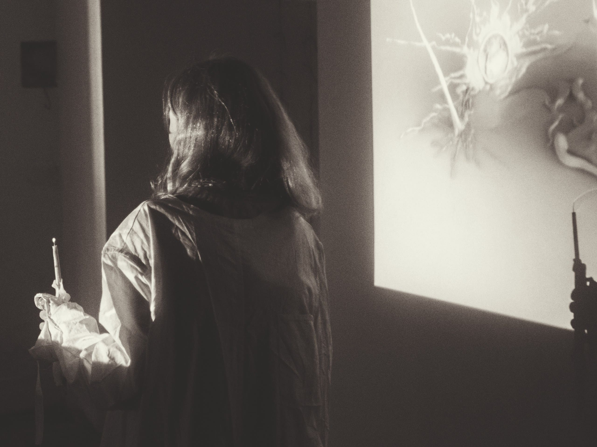
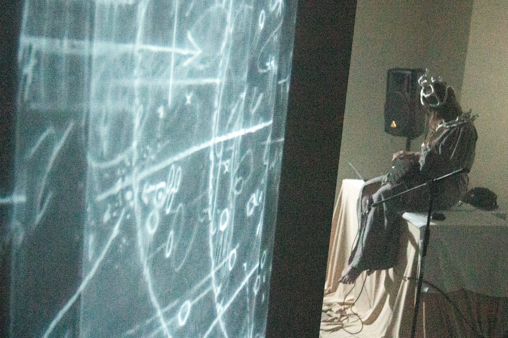

::сфера::

Сфера — это пространственный аналог окружности.
 Выставка функционирует как тотальная инсталляция, как цельное визуально-пространственное высказывание, вариативный путь с ответвлениями.
Блуждание сквозь безвременную туманность в поиске эфемерного — это потребность в осмысленном взаимодействии с визуальным искусством.
Отсутствуют экспликации и единый нарратив. Туман, как элемент экспонирования, заполняет подвал церкви, пряча художественные объекты от беглого взгляда; нарочито провоцирует столкновение зрителя с объектом искусства, зрителя со зрителем.
Художники работают в техниках графики, живописи, металла, мультимедиа инсталляции, саунд дизайна. Художественный язык рождается на стыке природного и технологического. Каждая работа — это артефакт. Сущность и язык представленных объектов подобен тайне.
Для нас, как для кураторов, важно создать неразрывное соединения между пространством и представленными объектами. Мы стремимся, чтобы зритель прокладывал путь, опираясь на многомерность сенсорного опыта.
Кураторы: Кристина-Серафима Мунтеану, Дарья Иванова
Художники: Кристина-Серафима Мунтеану, Дарья Иванова, Денис Лазарев, Михаил Палькин, Аъзам Ark, Аня Герасимова, Gena Hardblak, da sa, Даша Dawsh, Дарья Арбузова, Дуся Ким, Ира Pyorishko, Карина Островская, Ksusha Khrustal, Лиза Кузина, Мария Морозова, nehi, Полина Терюхова, necrocors, son1111ka, p01inqwa, Inner School of Open Studies :Протей Темен:
 Музыка: Alfia V. Bergstrom :Live:, Alexandra Soko :AV/Live:, Музыка сухих лепестков :Live:
 Выставка прошла в крипте действующего католического Храма Посещения Пресвятой
Девой Марией Елизаветы
Выставка прошла в крипте действующего католического Храма Посещения Пресвятой
Девой Марией Елизаветы
06/07/2024
Санкт-Петебруг